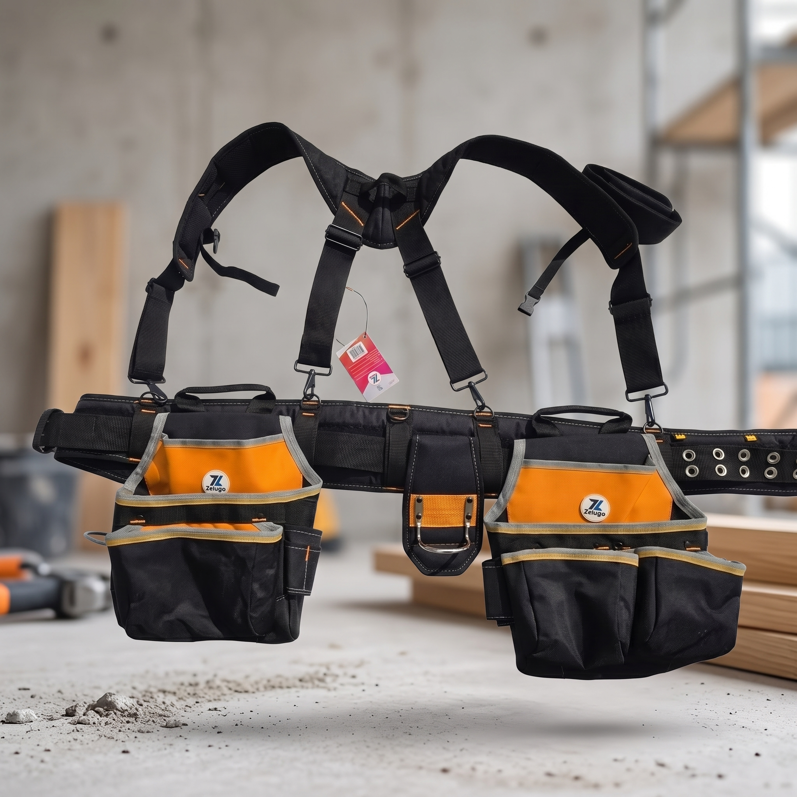
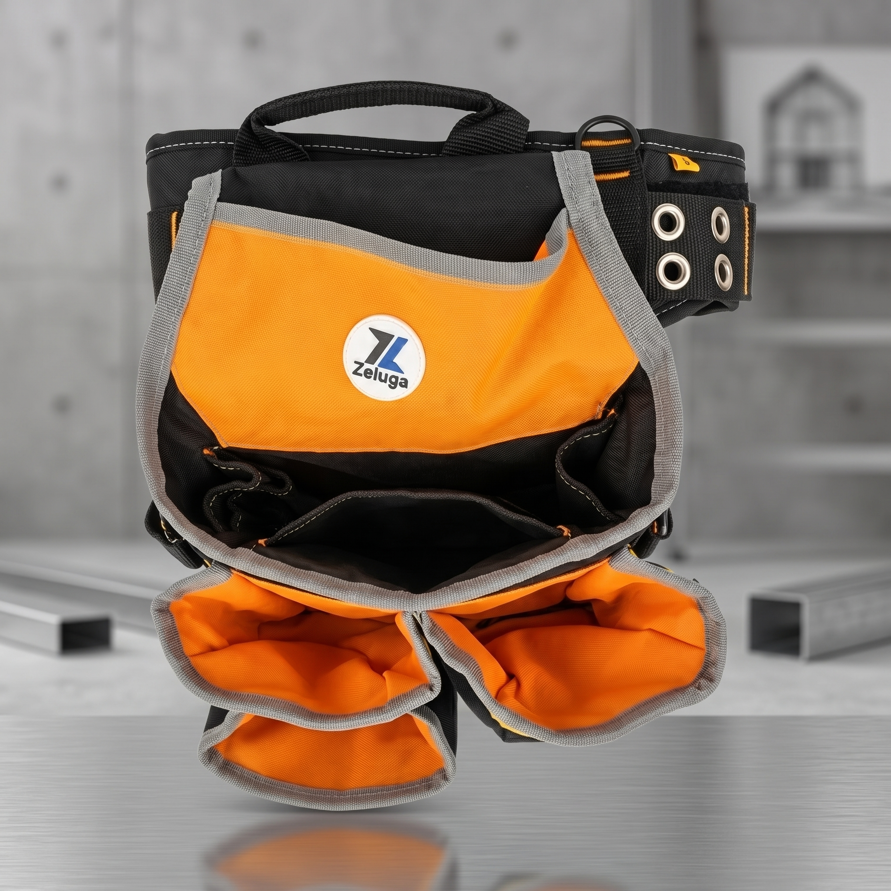
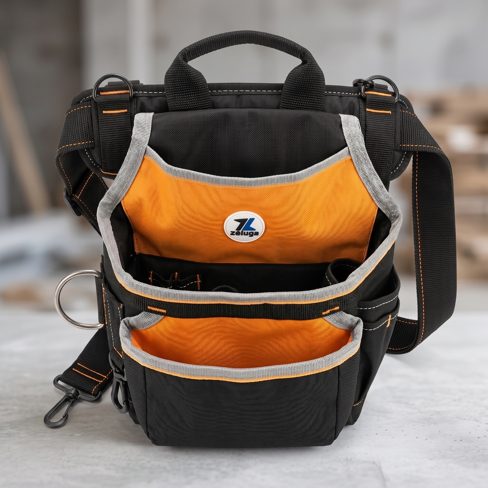
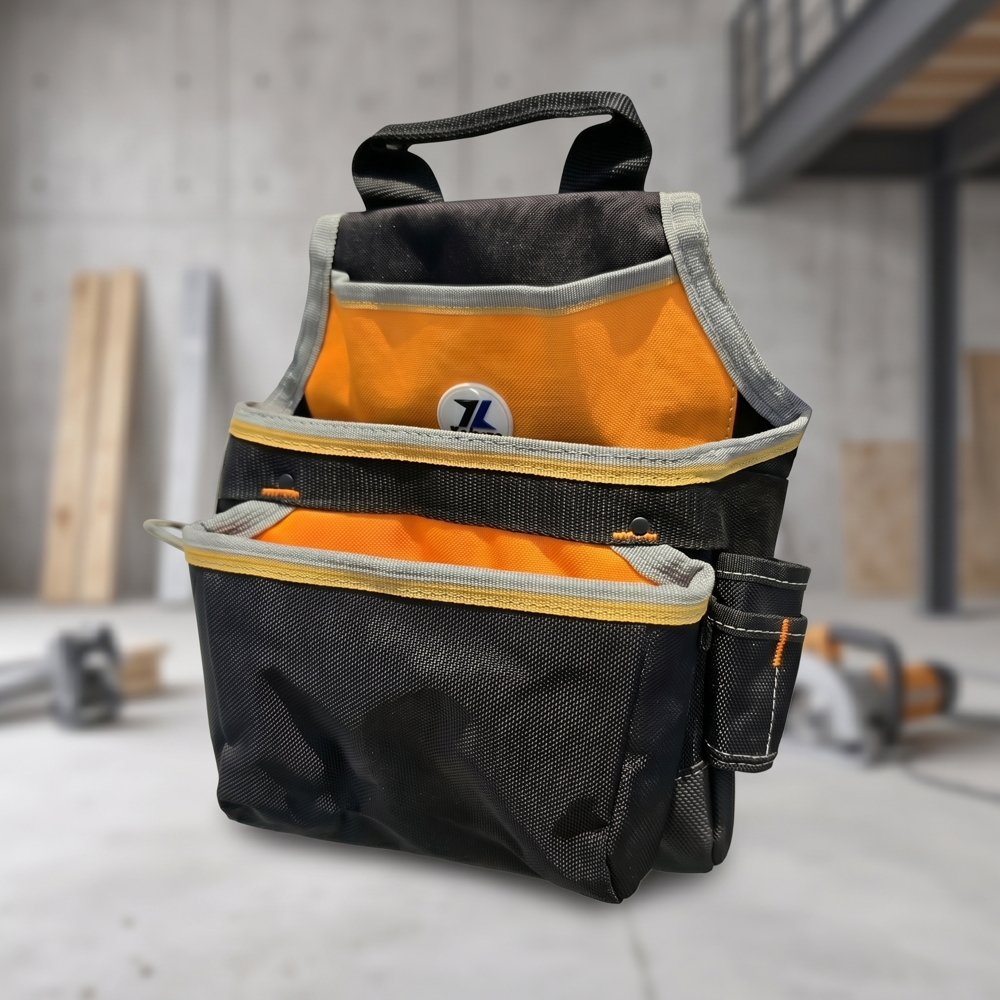

Cinturón portaherramientas Zeluga de poliéster con tirantes
$135.00 USD
🧰 Set portaherramientas Zeluga de poliéster — ligero, lavable y de alta visibilidad
Cinturón acolchado con ojales metálicos, dos bolsas con bolsillos ribeteados en naranja de alta visibilidad, porta martillo y tirantes acolchados desmontables. Encuentras la herramienta de un vistazo.
✅ Poliéster resistente y lavable
✅ Interiores naranja de alta visibilidad
✅ Tirantes acolchados desmontables
✅ Cinturón acolchado con ojales metálicos
✅ Porta martillo y bolsillos organizadores
Mucho más ligero que un set de cuero. 💪
Pedir por WhatsApp